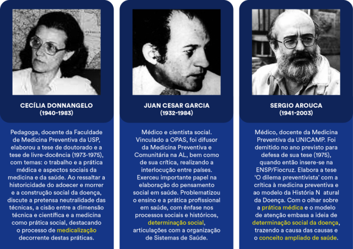
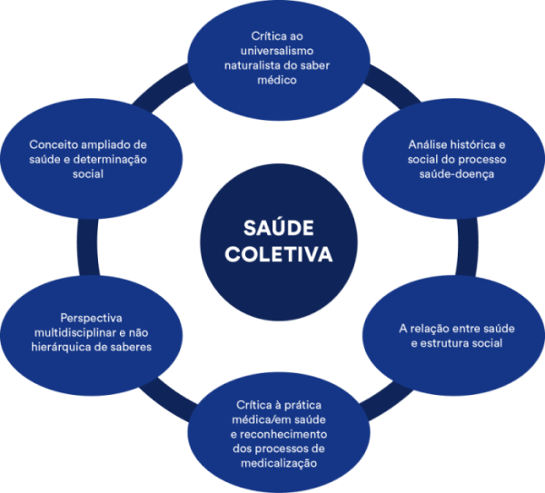

A designação 'Reforma Sanitária' remete a movimentos que levam à institucionalização de novas
ações e
orientações do Estado no campo da saúde em virtude de demandas sanitárias. Mas existem
diferentes
estratégias e projetos organizativos levados a termo por reformas de saúde, o que varia conforme
o
momento histórico, social e econômico vivido, refletindo sua época e valores.
Na história da saúde pública brasileira, é possível reconhecer diferentes momentos de reformas
sanitárias a partir da Primeira República (1889). Para esta aula, escolhemos destacar dois
movimentos de reforma como importantes marcos na organização das políticas de saúde do país:
Reforma Sanitária da Primeira República, liderada por Oswaldo Cruz no início
do século XX.
Reforma Sanitária iniciada na década de 1970, produzida a partir de
importante articulação de movimentos sociais.
A Reforma Sanitária da Primeira República foi um movimento que se iniciou no aparato estatal como
política de controle social essencial à construção do projeto nacional, em um cenário de extrema
desigualdade social e predomínio das doenças infecciosas. O movimento de reforma ocorreu em dois
momentos. O primeiro, marcado pela gestão de Oswaldo Cruz como Diretor-Geral da Saúde Pública (a
partir de 1903), teve como principal característica a ênfase no saneamento urbano das principais
cidades e o combate às epidemias de febre amarela, peste e varíola. No segundo momento (décadas
de
1910 e 1920), destacaram-se o saneamento rural e o combate a três endemias rurais -
ancilostomíase,
malária e mal de chagas -, visando curar e integrar os habitantes abandonados (os chamados
“idiotizados” e doentes) à comunidade nacional.
No primeiro momento, Oswaldo Cruz estabeleceu um Código Sanitário que instituiu a desinfecção,
inclusive domiciliar, o arrasamento de edificações consideradas nocivas à saúde pública, a
notificação permanente dos casos de febre amarela, varíola e peste bubônica e a atuação da
polícia
sanitária, bem como a campanha de vacinação obrigatória. Seus métodos tornaram-se alvo de
discussão
e muita crítica, culminando com um movimento popular no Rio de Janeiro, conhecido como a
“Revolta da
Vacina” (Costa, 1985; Casa de Oswaldo Cruz, 1995).
Já a Reforma Sanitária dos anos 1970/1980 foi um movimento que se iniciou na articulação entre
diferentes movimentos sociais - acadêmicos, estudantes, trabalhadores da saúde, comunidades de
bairro, igrejas, mulheres, indígenas, negros- na defesa da democracia e do direito à saúde. As
condições de saúde e o cenário de desigualdades acentuavam a crítica ao modelo de Estado
excludente.
Os perfis de adoecimento e morte caracterizavam uma situação de transição epidemiológica
incompleta,
onde conviviam doenças naquele momento identificadas como “da riqueza” (crônico-degenerativas) e
“da
pobreza” (infectocontagiosas).
No final dos anos 1970, há a conformação de uma frente ampla da saúde articulando movimentos
sociais,
legislativo e executivo, o que possibilita o início de um projeto de institucionalização de
políticas de saúde que levariam a uma ampliação do acesso a serviços de saúde, como as Ações
Integradas de Saúde (AIS) e o Sistema Unificado e Descentralizado de Saúde (SUDS). Assim, umas
vezes
com mais, outras vezes com menos diálogo, o projeto de reforma sanitária começa a ser desenhado
por
dentro do aparato estatal com ações institucionais que subsidiaram a definição do Sistema Único
de
Saúde (SUS) na Assembleia Constituinte de 1987/1988.
Principais características das reformas sanitárias da
Primeira República e dos anos 1970/1980 no Brasil
Fonte: Elaborado pelas autoras (2021)
Como se percebe, as duas reformas levaram a mudanças institucionais importantes na condução política
da saúde, mas ressalta-se o fato que a reforma sanitária do início do século parte de uma
necessidade estatal de organização e ordenamento do espaço social e da população, enquanto a reforma
sanitária dos anos 1970 desenvolve-se a partir de uma forte pressão social com a reivindicação da
melhoria das condições de vida e saúde.
As condições de possibilidade para a reforma sanitária brasileira dos
anos
1970/1980
Fonte: Fiocruz
Para uma compreensão mais abrangente do que foi o processo de reforma sanitária dos anos 1970/1980,
propomos um recuo às décadas de 1960/1970, quando o mundo iniciou movimentos importantes de
transformação política, econômica e social.
Do ponto de vista político, intensifica-se o debate acerca do papel do Estado, dos modelos políticos
e das instituições. Emergem nas sociedades pós-industriais mobilizações contra os regimes
autoritários e as instituições (movimentos estudantis, ecológicos, feministas, contraculturais,
anti-institucionais...). Estudos críticos como o de Erving Goffman trazem análises sobre o papel das
“instituições totais” e como operavam um modelo de Estado e relação com a sociedade extremamente
excludente e antidemocrático.
GLOSSÁRIO:
Instituição total - Termo cunhado por Erving Goffman na
obra “Manicômios, prisões e
conventos” para caracterizar o que estrutura algumas instituições estatais: "uma instituição
total pode ser definida como um local de residência e trabalho onde um grande número de
indivíduos com situação semelhante, separados da sociedade mais ampla por considerável
período de tempo, levam uma vida fechada e formalmente administrada. Essas instituições
totais não permitem qualquer contato entre o internado e o mundo exterior, até porque o
objetivo é excluí-lo completamente do mundo originário, a fim de que o internado absorva
totalmente as regras internas, evitando-se comparações, prejudiciais ao seu processo de
'aprendizagem'.”
Na economia, os Estados de Bem-Estar começam a dar indícios de crise e o modelo de desenvolvimento
keynesiano, que sustentou gloriosos anos de crescimento nos países desenvolvidos, já não se
apresenta como uma alternativa viável para os demais países (em desenvolvimento). Países que haviam
constituído sistemas de proteção abrangentes começam a sinalizar para a necessidade de Reforma
apontando para uma crise do modelo.
No campo social, surgem movimentos contraculturais com a vocalização de demandas de reconhecimento de
diferentes grupos sociais como as mulheres, negros, indígenas, população LGBT etc. Associados à
crítica às instituições, os novos movimentos sociais clamam por processos e instituições pautadas no
direito à voz e respeito à diversidade, sustentando a condução de processos sociais e políticos
democráticos.
Na América Latina, a realidade econômica e política na década de 1960 mantinha os países reféns dos
acordos políticos para a região. Vários países viviam a ditadura nesta década e os debates mais
críticos com fortalecimento dos movimentos sociais vão ocorrer em especial a partir da segunda
metade da década de 1970.
Alguns eventos que direcionam a política da região na década de 1960:
O Acordo Pan-Americano Aliança para o Progresso (1961) se
apresenta em um contexto político de
reação
dos EUA à possível propagação do socialismo na América Latina, em virtude da Revolução Cubana em
1959. Consistia em um acordo de investimentos para o desenvolvimento econômico e social, com
investimento nas áreas de reforma agrária, habitação, educação e saúde.
A Carta de Punta del Este é um dos desdobramentos da Aliança
e define orientações para a política
de
saúde da região como o fortalecimento de serviços básicos e a intensificação da investigação
científica (Lima, 2002). Nesse contexto, o I Plano Nacional de Saúde Pública para as Américas
(1963)
define a saúde como problema técnico, social, econômico, jurídico e cultural e a Organização
Panamericana de Saúde (OPAS) passa a assumir a função de assessoria permanente aos países,
iniciando
a difusão de um método de planejamento para a saúde compatível com os métodos empregados na área
econômica: o método Cendes/OPAS (Centro Nacional de Desarollo da Universidad Central da
Venezuela).
Inicia-se, assim, uma trajetória de discussão e incorporação da lógica de planejamento na saúde
articulada ao debate político e econômico.
Também nesta década, a OPAS promove a difusão da Medicina Preventiva e
Comunitária e coloca em
prática os princípios preventivistas do modelo da História Natural da Doença (HND), focalizando
setores sociais minoritários, articulando serviços locais diversos (públicos ou privados) e
impulsionando determinada ideia de participação comunitária.
Os programas de saúde comunitária contam com o patrocínio das Fundações norte-americanas e OPAS e é
incentivada a criação dos Departamentos de Medicina Preventiva e Comunitária nas Faculdades de
Medicina.
O modelo da História Natural da Doença (HND) propõe uma explicação para os processos que levam ao
adoecimento de um indivíduo desde o momento da exposição aos agentes causais até a recuperação ou a
morte. Conforme o modelo, são três os fatores que intervêm e condicionam o desenvolvimento de uma
doença: o agente, o hospedeiro e o meio ambiente, que se acham inter-relacionados em um estado de
constante equilíbrio. As inter-relações entre os fatores configuram um sistema fechado com um
“feedback” regulador. Agentes e hospedeiros dependem do ambiente, da mesma forma que o ambiente é
alterado/modificado por eles. A doença é o resultado de uma ruptura no equilíbrio deste sistema. São
identificadas ações de prevenção para o momento de pré-patogênese e de patogênese. Para prevenir o
adoecimento são propostas ações de promoção e proteção específica (prevenção primária). Para
prevenir complicações no processo de adoecimento são propostas ações de prevenção secundária. Como
ações para recuperação é proposta a prevenção terciária. Este é o modelo que embasa a prática da
Medicina Preventiva.
• Brasil nos anos 1960/1970: intensas transformações
A década de 1960 inicia com a perspectiva de consolidação de um modelo desenvolvimentista
nacionalista, com um projeto ousado de transformação da ordem política, econômica e social projetado
pelo governo João Goulart. As 'Reformas de Base' anunciadas no ano de 1962 sinalizavam para a
criação de condições de forma que os frutos do desenvolvimento econômico se distribuíssem de maneira
cada vez mais ampla pela população. Reformas estavam previstas em diversas áreas: agrária,
tributária, administrativa, política, bancária e educacional.
Na Saúde, a realização da III Conferência Nacional de Saúde (1963) sinalizava para a necessidade de
um Plano Nacional de Saúde que priorizasse responder às necessidades e possibilidades do povo
brasileiro a partir do exame da situação sanitária nacional.
Mas em 1964 um golpe militar muda o rumo em curso no país e estabelece um modelo de
desenvolvimentismo conservador e autoritário, recuando na trajetória de discussão das reformas
sinalizadas.
O modelo econômico adotado possibilitou em um primeiro momento um acelerado crescimento da economia.
De
1968 a 1973 o país alcançou altos índices de crescimento (11,1% de crescimento anual), o que ficou
conhecido como 'milagre econômico'. A mudança na economia refletiu também na reorientação dos postos
de trabalho e no incentivo à urbanização. Entre os anos 1960 e 1970 o país deixa de ser
predominantemente rural para ser urbano, em um processo que ocorreu de forma desordenada e sem
redistribuição da renda. O milagre econômico não foi acompanhado de desenvolvimento social, ao
contrário, houve crescente endividamento do país com o capital internacional, altos índices de
concentração de renda pela elite e acentuação das desigualdades sociais - configurando um quadro que
viria a ser compreendido como capitalismo dependente.
• Os movimentos de crítica
Nesse contexto, acontecem nas principais Faculdades de Medicina de São Paulo os Encontros dos
Departamentos de Medicina Preventiva (1969-1973) com o objetivo de realizar uma análise crítica do
projeto de Medicina Preventiva e Comunitária difundido pela OPAS para a América Latina.
Na ocasião, avaliava-se que o modelo difundido operava como um projeto conservador e adequado à
política externa dos EUA de disseminação de uma medicina cada vez mais liberal e menos socializada.
Inicia-se, então, a busca de diálogo com outros países da América Latina e a troca de experiências.
Em torno deste debate surge um movimento maior de construção de um projeto mais próximo à realidade
latino-americana trazendo a perspectiva de uma Medicina Social Latino-Americana. Esse diálogo
começa em primeiro momento especialmente entre as universidades e centros formadores,
consolidando uma base conceitual e teórica para a análise dos processos saúde-doença.
A grande mudança com a nova teoria foi a introdução do pensamento social na análise dos
processos de saúde e doença. A contribuição das ciências sociais e humanas para a saúde
consistiu na incorporação do olhar histórico, político e social para análise dos processos de
adoecimento, rompendo com a perspectiva hegemônica do saber biomédico.
PARA IR MAIS LONGE:
Sobre a construção teórica da compreensão histórico social do processo saúde-doença
Estudos importantes sobre a relação entre medicina e sociedade e o projeto de medicina preventiva
foram realizados neste período, tornando-se referências inaugurais para o pensamento social em saúde
na América Latina. Destacam-se as contribuições de Maria Cecília Donnangelo, Antônio Sergio Arouca e
Juan Cesar Garcia.
Contribuições de Cecília Donnangelo, Juan Cesar Garcia e
Sergio Arouca para o pensamento crítico na área da saúde

Juntamente com outros docentes inseridos em diferentes instituições de ensino e pesquisa na América
Latina (Ana Cristina Laurell, Edmundo Granda, Jaime Breilh entre outros), iniciou-se no Brasil um
diálogo em torno de um pensamento social em saúde, que consistia na politização do olhar sobre a
prática médica e a formação profissional, no entendimento da medicina como prática técnica e prática
social e produtora de medicalização da vida, e na compreensão de que a Medicina Preventiva
individualizava os problemas e não possibilitava uma leitura abrangente do processo saúde-doença,
como a determinação social da doença.
• Os movimentos de crítica: outros diálogos
Neste contexto, adensava-se o movimento de crítica denunciando a forma de organização dos Estados na
prestação de serviços de saúde. No Brasil, destaca-se a contribuição do médico sanitarista Carlos
Gentile de Mello, que ao analisar a relação entre saúde e desenvolvimento econômico e as modalidades
de prestação de serviços de saúde, denuncia uma estrutura de poder privatista e altamente
corruptora, atendendo aos interesses das empresas médicas, produzindo interferências no
comportamento dos profissionais, no emprego dos recursos, na capacidade de responder às demandas e
necessidades sociais.
Gentile mostra também que o crescimento econômico não levou ao desenvolvimento social; que a
ampliação da oferta de serviços de saúde e tecnologias mais avançadas não havia melhorado os níveis
de saúde da população; que a medicina, ao contrário do que se esperava, vinha produzindo uma
antimedicina, gerando iatrogenia e medicalização.
O quadro de distorções apontado por Gentile beneficiava-se de arranjo político dicotômico da saúde,
com a divisão de atribuições entre Ministério da Saúde (MS) e Instituto Nacional de
Assistência Médico-Previdenciária (INAMPS). Este arranjo não garantia o acesso de toda a população a
serviços médicos e ainda era extremamente dispendioso para o Estado brasileiro.
• Acentuam-se os movimentos de crítica na segunda metade dos anos 1970
Entre 1973 e 1974 surgem os primeiros indícios de uma crise de sustentabilidade política, econômica e
social do modelo de Estado adotado, também como reflexo da crise mundial da economia (crise do
petróleo). Dada a forte dependência da economia brasileira dos investimentos estrangeiros, a
situação mostrava-se preocupante.
Como estratégia política, o Brasil inicia um processo de 'abertura lenta, gradual e segura' do
governo autoritário a partir de 1974 e define um Plano Nacional de Desenvolvimento (II PND)
comprometido com a formulação de estratégias de desenvolvimento social.
Sobre o II PND:
A meta básica do II PND era a concepção de uma estratégia geral de desenvolvimento para o
país que constava:
1) da consolidação de uma economia moderna;
2) do ajustamento do país às novas realidades da economia mundial;
3) do esforço de integração nacional;
4) da formulação de estratégias de desenvolvimento social; e
5) da integração com a economia mundial.
(BRASIL. Presidência da República. (1974) II Plano Nacional de Desenvolvimento (1975-1979).
Brasília. P.34/35/36).
O fato inédito neste plano estava acima de tudo na integração e interdependência das
políticas a serem implementadas pelos diversos setores estatais. No II PND a política
social, por exemplo, recebia um caráter especial e seria igualmente responsável pelo
desenvolvimento do país.
Na realidade, o desenvolvimento efetivo do Estado dar-se-ia a partir do desenvolvimento
econômico, político e social. O desenvolvimento social do país seria obtido, por um lado,
através da conjugação de uma política de empregos com uma política de salários, resultando
na criação progressiva de uma base para o mercado de consumo de massas. Por outro lado, na
qualificação de mão-de-obra a partir da educação, treinamento profissional, programas de
saúde, saneamento e nutrição.
A variedade e natureza das políticas sociais desenvolvidas a partir de 74 demonstram o duplo
interesse
do Estado neste momento, qual seja: a manutenção da ordem com respaldo social e a constituição de um
Estado minimamente capaz de produzir desenvolvimento. As principais políticas sociais desenvolvidas
a partir dessa orientação foram:
Plano de Pronta Ação (PPA), em 1974, que consistiu numa medida para
viabilização da expansão da cobertura em saúde e desenhou uma clara tendência para o
projeto de universalização da saúde a partir deste período;
Criação do Fundo de Apoio ao Desenvolvimento Social (FAS), em 1974, que
distribuiu recursos para o financiamento de programas sociais;
Sistema Nacional de Saúde (SNS), em 1975, que consistiu no primeiro modelo
político de saúde de âmbito nacional, compondo ineditamente um conjunto integrado de
ações nos três níveis de governo;
Programa de Interiorização das Ações de Saúde e Saneamento (PIASS), em 1976,
que estendeu serviços de atenção básica à saúde no Nordeste do país;
Sistema Nacional da Previdência e Assistência Social (SINPAS), em 1977, com
mecanismos de articulação entre saúde, previdência e assistência no Ministério da
Previdência e Assistência Social; dentre tantas outras medidas.
No âmbito social, a delimitação de uma política social neste período e a abertura lenta e gradual
do regime militar estabeleceram um espaço de maior articulação para os movimentos sociais que
até então, sob forte repressão, não encontravam espaço para expressão - movimentos de mulheres,
movimento negro, movimento indigenista (primeiras assembleias indígenas), movimento de
associações de moradores, de favelas, de trabalhadores (greves do ABC), entre outros.
Os movimentos se organizavam em torno do cenário de grande desigualdade social - fome, miséria,
epidemias de doenças anteriormente controladas, urbanização desordenada, falta de saneamento
básico, de
habitação, educação, etc. - associado a denúncias de violação de direitos humanos, como tortura
e perseguição política, maus tratos em hospitais psiquiátricos, ocupação ilegal de terras e
desapropriação de terras indígenas, aumento da violência.
Na saúde mental, ganha expressão o movimento dos trabalhadores com as denúncias sobre as
condições de trabalho e de assistência nos hospitais psiquiátricos, bem como análises mais
abrangentes sobre a configuração de uma indústria da loucura, atendendo aos interesses do
empresariado da saúde.
No pós-74, se fortalece o movimento social da saúde, reunindo estudantes, docentes, profissionais
de
saúde. Em 1976 é criado o Centro Brasileiro de Estudos de Saúde (CEBES) produzindo espaços de
diálogo e difusão de ideias por meio da Revista Saúde em Debate.
Bases para um novo projeto de formação e prática em saúde: a Medicina
Social, a
Saúde Coletiva
O diálogo entre instituições formadoras de países da América Latina na construção de um novo
projeto de formação em saúde consolidou a proposta de uma Medicina Social Latino-Americana. No
Brasil, esse projeto ganhou a denominação Saúde Coletiva.
No debate destacavam-se as seguintes proposições:
A incorporação do pensamento social em saúde, numa abordagem social e
histórica do adoecer e morrer;
A ênfase no conceito ampliado de saúde e na determinação social da
doença;
A defesa de um arcabouço teórico-conceitual multidisciplinar para
análise dos processos saúde-doença.
PARA IR MAIS LONGE:
Sobre a contribuição das ciências sociais e humanas para a saúde
A consolidação deste projeto pôde se valer do financiamento da OPAS e Fundações americanas para
criação de Instituições e Programas de Pós-Graduação e bolsas de estudo, bem como o
financiamento para realização de Programas Sociais e pesquisa.
Na década de 1970, seis Programas de Pós-Graduação Stricto Sensu com a perspectiva
da Saúde Coletiva foram criados ou reestruturados no Brasil; e dois grandes Programas de
pesquisa e apoio aos Programas de Pós-Graduação foram ofertados: Programa de Estudos
Socioeconômicos em Saúde - PESES e Programa de Estudos
e Pesquisas Populacionais e
Epidemiológicas - PEPPE.
Como expressão do crescimento desta articulação, entre os anos 1978/1979 foi criada a Associação
Brasileira de Saúde Coletiva (Abrasco) (1978/1979), com a promoção de encontros entre centros
formadores em saúde para discussão sobre projetos formativos na pós-graduação (especializações,
residências, mestrados).
Saúde Coletiva

Fonte: Elaborado pelas autoras
(2021)
• Democracia e Saúde
Em 1979, o Cebes apresenta o documento A questão democrática da saúde, no 1º Simpósio sobre Política
Nacional de Saúde na Câmara Federal.
O documento sintetiza a pauta para uma política de saúde “autenticamente democrática” partindo do
reconhecimento do direito universal à saúde, do caráter socioeconômico global como condição para
saúde, da responsabilidade parcial das ações médicas, individuais e coletivas na promoção ativa da
saúde; do caráter social do direito à saúde e da responsabilidade do Estado e da coletividade em sua
efetivação.
No documento, está feita a proposta da criação de um Sistema Único de Saúde, público e nacional;
com financiamento estável e previsto no orçamento dos 3 níveis de governo; descentralizado e com
participação popular.
Pilares da Reforma Sanitária
Fonte: Elaborado pelas autoras (2021)
Nesse momento, começa a se delimitar de forma mais clara um movimento em torno de uma reforma da
saúde. A construção da reforma sanitária brasileira se desenha, assim, frente a um cenário de crise
e, também, de mobilização social reivindicando por direitos.
Conforme resume Sonia Fleury,
“A construção do projeto da reforma sanitária funda-se na noção de crise: crise de conhecimento e
da prática médica, crise do autoritarismo, crise do estado sanitário da população, crise do
sistema de prestação de serviços de saúde. A estratégia de transformação da situação de crise,
inspirada em uma leitura socializante da problemática da saúde, concretiza-se na perspectiva da
luta pela democratização que se baseia na interpelação dos indivíduos enquanto cidadãos, capazes
de aprofundar sua consciência sanitária e, assim, transformarem-se em atores sociais organizados
na luta pelo direito à saúde como dever do Estado”(Teixeira, 1989: 203)
(Teixeira, 1989: 203).
• Os caminhos institucionais da Reforma Sanitária (década de 1970)
As ideias difundidas e debatidas no âmbito acadêmico e social começam a ecoar no âmbito político e
institucional. Em 1979, o Ministério da Saúde convoca a realização da VII Conferência Nacional de
Saúde (CNS) e, nela, apresenta a proposta de implementação de um sistema mais abrangente e universal
de saúde, o Prev-Saúde.
O Prev-Saúde consistia numa proposta de extensão nacional do Programa de Interiorização das Ações de
Saúde e Saneamento (PIASS) que havia sido desenvolvido entre 1976 e 1979, no nordeste do Brasil. O
PIASS e o Prev-Saúde visavam, na mesma medida, dotar o país de uma rede de serviços básicos que
oferecesse os
cuidados primários de proteção, promoção e recuperação da saúde em quantidade e qualidade. Sua meta
era a cobertura de saúde a toda a população até o ano 2000. As estratégias para a implementação
deste programa consistiam na regionalização, expansão da oferta de serviços, integração das ações,
hierarquização da rede e participação comunitária. O sistema seria gerido em coparticipação pelo
Ministério da Saúde e Ministério da Previdência e Assistência Social, executado pelos municípios e
supervisionado, coordenado e respaldado nos estados.
No entanto, o Prev-Saúde acabou não sendo incorporado pelo governo e muito menos estabelecido na
prática, dadas as resistências intraburocráticas assentadas no INAMPS, a forte oposição das
entidades do segmento médico-empresarial e, ainda, as pressões oriundas do campo da medicina
liberal.
Ressalte-se que a articulação entre Ministério da Saúde e Ministério da Previdência e Assistência
Social era permeada por disputas antigas que estavam relacionadas às heranças institucionais desses
dois setores do Estado.
Enquanto o Ministério da Saúde costumava organizar suas ações a partir de recortes territoriais e do
mapeamento de necessidades de abrangência populacional, o Ministério da Previdência e Assistência
Social tradicionalmente organizava suas ações a partir da oferta e precificação de procedimentos
individuais. Além disso, havia diferenças importantes no peso dos orçamentos e na permeabilidade à
lógica privatista. Essas questões resultavam em diferentes formas de prover atenção em saúde que
estavam em disputa.
Como resultado da disputa política no período, o Prev-Saúde não se estabeleceu como uma proposta
consensual para o setor e outros mecanismos de reformulação começaram a ser encaminhados. A primeira
medida tomada foi a formação em 1981, na esfera de atuação do Ministério da Previdência e
Assistência Social, do Conselho Consultivo de Administração de Saúde Previdenciária (CONASP). O
CONASP propôs em 1982 o Plano de Reorientação da Assistência à Saúde no âmbito da Previdência
Social, definido a partir de um diagnóstico das principais distorções e implicações do modelo de
saúde desenvolvido pelo INAMPS até aquela data.
O diagnóstico identificou um conjunto de distorções vivenciadas no INAMPS:
serviços inadequados à realidade;
insuficiente integração dos diversos prestadores;
recursos financeiros insuficientes e cálculo imprevisto;
desprestígio dos serviços próprios;
superprodução dos serviços contratados;
rede de saúde ineficiente, desintegrada e complexa apontando que:
- a relação do INAMPS, órgão responsável pela assistência médica
previdenciária, com os demais serviços de assistência promovidos pelo Estado, via
estados e municípios, era opaca e pouco operativa;
- que os serviços oferecidos pelo Ministério da Saúde (secretarias estaduais
e
municipais, inclusive) funcionavam independentemente e paralelamente aos serviços
oferecidos pelo Ministério da Previdência e Assistência Social/INAMPS, o que formava uma
rede pública desintegrada sem a prévia programação do sistema. Tal fato conformava uma
dificuldade a mais no planejamento dos investimentos e gastos no setor.
Propostas CONASP para reestruturação do setor
A partir desta discussão e do diagnóstico do CONASP foram elaboradas três propostas
operacionais básicas para a reestruturação do setor, mas não para desmontagem do sistema.
Dentre as propostas apresentadas destacaram-se: o Programa das Ações Integradas de Saúde
(PAIS), a Programação e Orçamentação Integrada (POI) e o Sistema de Assistência
Médico-Hospitalar da Previdência Social (SAMHPS).
Veja o teor de cada proposta:
1 - Programa das Ações Integradas de Saúde (PAIS)
Integração e racionalização dos serviços públicos de saúde e de articulação destes com a rede
conveniada e contratada, o que comporia um sistema unificado, regionalizado e hierarquizado
de referência e contrarreferência para o atendimento. O programa era executado a partir da
gestão tripartite Ministério da Saúde-INAMPS-Secretarias Estaduais.
2 - Programação e Orçamentação Integrada (POI)
Mecanismos para programação e orçamentação dos recursos para a saúde de forma integrada, ou
seja, na concepção de um instrumento integrador da política de recursos do INAMPS
(Ministério da Previdência e Assistência Social) e dos serviços estaduais e municipais
(Ministério da Saúde).
3 - Sistema de Assistência Médico-Hospitalar da Previdência Social (SAMHPS)
Introdução de um instrumento gerencial e de pagamento de contas hospitalares baseado nos
procedimentos médico-cirúrgicos, a Autorização de Internação Hospitalar (AIH), para o
controle de recursos pagos ao setor privado.
Juntas, as três propostas expressaram a conformação dos princípios básicos para uma política
de saúde unificada, integrada e descentralizada. Estas propostas, no entanto, apesar de
terem avançado na discussão sobre o funcionamento do setor previdenciário e sua articulação
com o setor saúde, mantiveram intacta a discussão sobre a democratização e universalização
do
direito à saúde, além de ser uma proposta política sem o compromisso efetivo do Estado.
As Ações Integradas de Saúde tiveram o apoio político de muitos governadores
recém-eleitos em 1982, o que se constituiu como um fator fundamental para o encaminhamento
da reforma de saúde.
Em 1984 mais um fator veio somar ao processo de reforma sanitária: decidia-se o futuro político do
país com a escolha indireta, pelo Colégio Eleitoral, do novo presidente do país. A “Nova República”
e a “transição democrática” traziam novas perspectivas e muitas expectativas de mudança.
Os acordos que possibilitaram a vitória de Tancredo em 1984 fortaleceram o sentido de
composição de
uma “transição negociada” do regime militar para o democrático, sem uma ruptura com o quadro
político anterior.
A Aliança Democrática possibilitou nos dois primeiros anos a ocupação do grupo progressista
principalmente nos setores sociais de organização do Estado e as áreas econômica e administrativa
ficaram majoritariamente sob a responsabilidade da vertente conservadora. No tocante ao setor saúde,
o projeto de governo de Tancredo Neves serviu como instrumento para o encaminhamento das propostas
da reforma, comprometendo-se com seus princípios básicos, contemplando desde a questão da
universalização da atenção à saúde, até a unificação do setor, descentralização
político-administrativa e controle social.
Atores do movimento sanitário passaram a ocupar cargos executivos de importância na condução das
políticas de saúde. No INAMPS/Ministério da Previdência e Assistência Social a direção ficou a cargo
do professor Hésio Cordeiro, importante idealizador e construtor do projeto da reforma. Hésio
juntamente com José Luis Fiori e Reinaldo Guimarães, todos docentes do Instituto de Medicina Social
da Uerj, foram responsáveis pela escrita do documento apresentado no I Simpósio sobre Política de
Saúde da Câmara dos Deputados.
No Ministério da Saúde, foi designado como Secretário-Executivo o professor Eleutério Rodrigues Neto,
também importante idealizador e defensor do projeto de construção de um Sistema Único de Saúde.
Na Presidência da Fundação Oswaldo Cruz o professor Sergio Arouca, que já foi localizado pela sua
participação neste debate.
Apesar de um arranjo político com importantes personagens que vinham sustentando o projeto de reforma
da saúde, algumas diferenças em relação às estratégias a serem adotadas começaram a se apresentar,
em especial no que tange à unificação do Ministério da Saúde com o INAMPS.
Dos grupos de interesse no interior do aparelho de Estado se apresentavam na definição da política de
saúde, o Ministério da Saúde e o Ministério da Previdência e Assistência Social.
No grupo vinculado ao Ministério da Saúde, havia a defesa da proposta de
unificação da saúde no nível federal (o que ficou conhecido como “reforma pelo alto”)
com a criação de um novo Ministério da Saúde que incluísse tanto as ações executadas por
este órgão quanto as ações do INAMPS (o principal órgão responsável pela assistência
médica). Tal proposta baseava-se no pressuposto de que a universalização do direito à
saúde só se concretizaria na medida que o vínculo de contribuição previdenciária não
fosse mais um condicionante para o acesso à assistência à saúde.
No grupo vinculado ao Ministério da Previdência e Assistência Social, em
especial o grupo vinculado ao INAMPS, defendia-se que a estratégia de unificação não
deveria ocorrer com a transferência imediata do INAMPS para o Ministério da Saúde. O
INAMPS concentrava muito poder e sua transferência significava não só a transferência de
recursos, mas também de poder político. Assim, a proposta apontava para a modernização
da máquina previdenciária e a promoção de maior eficiência e agilidade ao INAMPS,
constituindo uma unificação “por baixo”, como costumavam dizer, o que significava
descentralizar e unificar gradativamente o setor a partir do INAMPS e por dentro da
máquina.
Essas duas posições geravam um impasse no encaminhamento institucional da Reforma e o caminho
encontrado foi a realização de uma nova Conferência de Saúde, com a proposta de abertura e diálogo
com o maior número de atores para aprofundar a proposta de unificação.
A Oitava Conferência Nacional de Saúde foi convocada e realizada no ano de 1986 sendo presidida por
Sergio Arouca. Contou com a presença de mais de quatro mil pessoas e a participação expressiva de
grupos sociais de diversos segmentos, encerrando uma lista de propostas sistematizadas para a
política de saúde, dentre elas:
universalização da saúde e garantia do direito como dever do Estado, sendo
de caráter essencialmente público;
reformulação do Sistema Nacional de Saúde, com a constituição de um comando
único do sistema, com transferência imediata do INAMPS para o Ministério da Saúde e a
separação progressiva dos recursos para financiamento da previdência;
formação de uma Comissão Nacional da Reforma Sanitária (CNRS) para formular
um texto que pudesse subsidiar as discussões relativas à definição da política de saúde
na Assembleia Nacional Constituinte;
expansão e fortalecimento do setor estatal em níveis federal, estadual e
municipal, tendo como meta uma progressiva estatização do setor;
controle dos prestadores de serviços privados, subordinados ao papel
diretivo da ação estatal, garantindo o controle dos usuários através dos seus segmentos
organizados.
No mesmo ano da Conferência, e também no ano seguinte (1987), ocorreram algumas Conferências de Saúde
temáticas agregando uma ampla pauta de reivindicações relativas à política de saúde acumulando
discussões e subsídios para o debate Constituinte.
Conferências temáticas e questões centrais apresentadas para debate
Conferência Nacional de Saúde e Direitos da Mulher (1986)
Vida digna e plena, sem discriminação de sexo, raça, idade
ou classe social
Assistência integral à saúde da mulher
Direitos da reprodução humana e proibição de políticas de
controle da natalidade
Legalização e descriminalização do aborto
Saúde mental e combate à violência física e sexual
Conferência Nacional de Recursos Humanos para a saúde (1986)
Defesa de regime jurídico específico para o mercado de
trabalho em saúde - recrutamento e seleção, plano de cargos e salários,
regime e jornada de trabalho, avaliação de desempenho e outros.
Diretrizes para formação e qualificação profissional.
Estratégias de organização interinstitucional, organização
dos trabalhadores e relação com os usuários.
Conferência Nacional de Alimentação e Nutrição (1986)
Denuncia a grave situação alimentar e nutricional do país.
Defesa da alimentação como direito.
Recomenda criação de um Sistema Nacional e de um Conselho
Nacional de Alimentação e Nutrição.
Defesa de Políticas agrícolas e agrárias para garantia de
alimento suficiente, acessível e saudável.
Conferência Nacional de Proteção à Saúde do Índio (1986)
A posse territorial e o uso exclusivo dos recursos naturais
do solo e subsolo às nações indígenas.
Assegurar e garantir a integridade de seus ecossistemas
específicos.
Acesso às ações e serviços de saúde, bem como sua
participação na organização, gestão e controle, respeitadas as
especificidades etnoculturais.
Para ir mais longe:
Relatório final da Conferência -
texto publicado em janeiro de 1988, na
edição especial da Revista do Centro Brasileiro de Estudos de Saúde -
Cebes - Saúde em Debate, sobre a Conferência.
Conferência Nacional de Saúde dos Trabalhadores (1986)
Crítica ao modo de produção e seus efeitos na saúde dos
trabalhadores.
Revisar legislação referente à segurança e saúde do
trabalhador.
Estabelecimento de uma Política Nacional de Saúde dos
Trabalhadores com a garantia de direitos e a participação dos
trabalhadores na elaboração da política.
Importante destacar que tanto a Oitava Conferência como a Comissão Nacional da Reforma Sanitária
aprovaram a proposta de unificação pelo alto com a passagem imediata do INAMPS para o Ministério da
Saúde. Tal cenário pressionou o Ministro da Previdência na definição de políticas para essa
transferência. No entanto, o contexto político em meados do governo Sarney (1987) voltava-se para um
fortalecimento dos segmentos mais conservadores da Aliança Democrática, e as ameaças de substituição
dos líderes e ministros da reforma serviram uma vez mais como argumento na não transferência do
INAMPS. Foi neste contexto que se concretizou o SUDS, uma estratégia-ponte para o SUS, permitindo a
continuidade da reforma, mas não levando a transferência de comando do INAMPS para o Ministério da
Saúde.
É PRECISO OUVIR
Pronunciamento do sanitarista Sergio Arouca durante a 8ª Conferência Nacional em Saúde,
realizada em março de 1986, em Brasília (DF), que representa um marco na história do SUS.
Arouca, em seu célebre discurso, discorre sobre o conceito ampliado de saúde -formulado no
evento - definido como completo bem-estar físico, mental e social e não a simples ausência
de doença.
• Sistema Unificado e Descentralizado de Saúde (SUDS): “estratégia-ponte” para
o SUS
Em 1987 o Sistema Unificado e Descentralizado de Saúde (SUDS) é apresentado como uma estratégia de
consolidação e desenvolvimento qualitativo das Ações Integradas de Saúde (AIS), numa perspectiva de
descentralização do sistema “de baixo para cima”, que significava unificar e fortalecer as bases até
atingir o nível central de organização - Ministério da Saúde/INAMPS.
A estratégia de descentralização serviria assim como um mecanismo organizacional que incentivaria a
tomada de responsabilidade das esferas estaduais, municipais e locais no encaminhamento da
unificação, integração e hierarquização da rede. A universalização da assistência era a meta
apontada no projeto SUDS, configurando-o como uma “estratégia-ponte” para o SUS - Sistema Único de
Saúde.
O SUDS, assim, avançou no processo de descentralização e universalização da saúde, mas manteve
intocado o papel do INAMPS de controlador e cofinanciador do sistema. O INAMPS apenas perdia seu
papel de executor das prestações de serviço delegando poderes de execução para os estados e
municípios. Expressão dos dissensos e não dos consensos como muitos podem ainda hoje apostar, o SUDS
definiu-se como estratégia única na continuidade do processo descentralizador, pois os conflitos
internos ao setor saúde extrapolavam as questões discutidas de organização e dificultavam o
encaminhamento das propostas reformistas.
O SUDS foi criticado por vários entes e setores.
Pelos empresários da saúde, que
passaram a ter que negociar com as esferas
estaduais e não mais com o nível central;
Pela burocracia estatal do INAMPS, que
perdia em status e poder político;
Pelos reformistas da saúde, que
entendiam ser esta apenas uma maneira de
manter o poder político do INAMPS na previdência e às custas da ideia de reformulação do
SUS;
Pelos parlamentares, que compreendiam
ser esta uma forma de fortalecer o
poder dos estados.
• Assembleia Nacional Constituinte
Sessão de aprovação da Constituição de 1988
- Fonte: Acervo SEDI/CD
A Assembleia Nacional Constituinte teve dois momentos políticos bastante diferenciados. Um primeiro,
ainda no momento de trabalho das Comissões temáticas, quando o arranjo político era favorável ao
debate da reforma, pois mantinha-se a coalizão governista. Um segundo momento, que iniciou no final
do ano de 1987, foi de rearranjo da coalizão com a articulação de forças políticas mais
conservadoras.
Na primeira fase, a Comissão temática de Saúde, Seguridade e
Meio Ambiente havia aprovado na íntegra
as propostas para a saúde apresentadas em plenário e consonantes com as propostas aprovadas na
Oitava Conferência, Conferências temáticas, CNRS e documentos apresentados pelos movimentos sociais.
As propostas podem ser assim resumidas:
criação de um Sistema Único de Saúde (SUS);
afirmação da saúde como direito de todos e dever do Estado - universalidade;
descentralização, com direção única em cada esfera de governo;
integralidade;
participação da comunidade.
Na segunda fase, o quadro institucional no Ministério da
Previdência e Assistência Social e
Ministério da Saúde estava totalmente renovado. Na Comissão temática da Ordem Social e na Comissão
de Sistematização, novas negociações envolveram a redefinição de algumas propostas do texto da
saúde, com a inserção do capítulo da saúde no contexto de uma política de Seguridade Social.
A Seguridade Social configura uma estrutura de proteção social:
abrangente - universalidade da
cobertura e do atendimento
justa - uniformidade e equivalência dos
benefícios e serviços às populações urbanas e rurais
equânime - equidade na forma de
participação do custeio
democrática - caráter democrático e
descentralizado na gestão administrativa
Com a Seguridade há um redesenho institucional do Estado na condução das políticas sociais, com a
formulação de um ministério e orçamento únicos para o conjunto dos setores integrantes do sistema de
seguridade social: saúde, previdência e assistência social. Este novo setor passaria a ser
financiado (direta e indiretamente) por toda a sociedade, através de um único órgão controlador e
gestor destes três setores, o Ministério da Seguridade Social.
PARA SABER MAIS:
Redação final do Capítulo da Seguridade Social e os
artigos
relativos à Saúde.
Título VIII - Da Ordem Social - Art.193 - A ordem
social tem como base o primado do
trabalho, e como objetivo o bem-estar e a justiça sociais.
Capítulo II - Da Seguridade Social
Art.194 - A seguridade social compreende um conjunto
integrado de ações de iniciativa dos
Poderes Públicos e da sociedade, destinadas a assegurar os direitos relativos à saúde, à
previdência e à assistência social.
Art.195 - A seguridade social será financiada por
toda a sociedade, de forma direta e
indireta, nos termos da lei, mediante recursos provenientes dos orçamentos da União, dos
Estados, do Distrito Federal e dos Municípios, e das seguintes contribuições sociais: I
- dos empregadores, incidente sobre a folha de salários, o faturamento e o lucro; II -
dos trabalhadores; III - sobre a receita de concursos de prognósticos.
Art.196 - A saúde é direito de todos e dever do
Estado, garantido mediante políticas
sociais e econômicas que visem a redução do risco de doença e de outros agravos e ao
acesso universal e igualitário às ações e serviços para sua promoção, proteção e
recuperação.
Art.197 - São de relevância pública as ações e
serviços de saúde, cabendo ao Poder
Público dispor, nos termos da lei, sobre sua regulamentação, fiscalização e controle,
devendo sua execução ser feita diretamente ou através de terceiros e, também, por pessoa
física ou jurídica de direito privado.
Art.198 - As ações e serviços públicos de saúde
integram uma rede regionalizada e
hierarquizada e constituem um sistema único, organizado de acordo com as seguintes
diretrizes: I - descentralização, com direção única em cada esfera de governo; II -
atendimento integral, com prioridade para as atividades preventivas, sem prejuízo dos
serviços assistenciais; III - participação da comunidade.
Art. 199 - A assistência à saúde é livre à
iniciativa privada.
• Os caminhos institucionais da Reforma Sanitária (década de 1980)
Os acordos possibilitaram a manutenção dos princípios básicos do sistema de saúde proposto: a
universalização, a integração, a unificação, a descentralização e a participação social. Mas também
selaram uma base institucional fragilizada, na relação com a Previdência, na garantia de
financiamento, nos parâmetros para regulação do setor privado.
As negociações e acordos conformados na Assembleia Nacional Constituinte de 87/88 estabeleceram um
capítulo de saúde abrangente. Os princípios básicos do SUS foram definidos, mas o encaminhamento da
política de saúde não foi delimitado. As negociações finais na ANC deram-se em um quadro
político-institucional rearticulado e a operacionalização da reforma foi remetida para legislação
complementar. Assim, os consensos negociados obtidos na definição
abrangente do texto constitucional da saúde significaram perdas e ganhos na discussão reformista da
saúde.
Dentre as perdas podemos destacar:
a participação da iniciativa privada como forma complementar ao SUS;
a não-definição de um percentual de recursos para a saúde;
a não-explicitação dos mecanismos de viabilização da descentralização e de
unificação do sistema.
Quanto aos pontos remetidos à legislação complementar:
a definição de um percentual de recursos para a saúde;
a definição de parâmetros básicos para a descentralização;
as formas de controle do setor privado;
a definição da relação entre os três setores da seguridade.
Após a promulgação da “Constituição Democrática”, as alianças políticas obtidas no curso da transição
democrática sofreram recomposições e a política de Seguridade Social aprovada não foi encaminhada
como previsto. Não foi criado um Ministério Único da Seguridade Social, as bases de financiamento e
distribuição entre as áreas da Seguridade não foram cumpridas e cada área da Seguridade definiu um
caminho próprio de organização.
• Caminhos da Reforma Sanitária
No final da década de 1980 algumas análises sobre a Reforma Sanitária começaram a surgir na produção
de saúde. O livro 'Reforma Sanitária: Itália e Brasil', organizado por Giovanni Berlinguer, Sonia
Fleury e Gastão Campos (1988), reuniu análises importantes sobre os caminhos da Reforma Sanitária
nos dois países.
PARA IR MAIS LONGE:
Esta coletânea apresenta uma reflexão sobre o processo da Reforma Sanitária
italiana, ao mesmo tempo que coloca questões cruciais para o entendimento da transição
em curso no sistema de saúde no Brasil e das possibilidades e limites de uma reforma
sanitaria. O livro trouxe em especial um debate protagonizado por
Sonia Fleury e Gastão
Campos sobre as apostas realizadas para o desenvolvimento da Reforma. O texto
tornou-se
conhecido pela polêmica que mobilizou e textos de réplica e tréplica posteriores à
publicação. Autores: Giovanni Berlinguer, Sonia Fleury Teixeira e Gastão Wagner de Souza
Campos.
A principal polêmica apresentada remetia à aposta na via institucional do SUS e os efeitos desta
estratégia para o distanciamento das bases sociais do movimento de reforma.
A opção pela institucionalidade, conforme Campos,
“(...) ao contrário de outros países capitalistas, que realizaram reformas na
saúde, e nos quais
os intelectuais progressistas tiveram que compor-se com o movimento sindical de trabalhadores ou
com os partidos apoiados nessa classe, aqui, o principal agente de transformações teria sido o
“partido sanitário” encastelado no aparelho estatal e apoiado, evidentemente, por autoridades
constituídas”
(Campos, 1989: 182)
Já para Fleury,
“Mais do que as questões técnicas, o que se altera fundamentalmente é a lógica política na
condução das mudanças propostas. Não se trata mais de organizar a sociedade em torno de um
projeto de transformação do Estado, mas se requer a utilização, o manejo do aparelho estatal na
direção proposta. Nesse sentido, duas linhas de ação parecem ter sido as que mais claramente
marcaram essa fase atual: a utilização dos instrumentos institucionais a fim de propiciar o
aumento da organização técnico-política necessária para o avanço do projeto/processo da reforma
sanitária e a transformação e/ou criação de mecanismos capazes de alterar, de maneira gradual e
ascendente, a organização institucional do setor, em direção a um sistema público de saúde mais
racional, eficiente e democrático”
(Teixeira, 1989: 201).
O companheiro da obra, Giovanni Berlinguer, ressalta o aprendizado das reformas sanitárias
empreendidas na Itália e no Brasil destacando-as como sinônimo de “luta social”, por envolver a
construção de sujeitos políticos e a transformação da falsa consciência sanitária numa nova
consciência sanitária capaz de reconhecer o processo de produção e reprodução da saúde e da doença.
Para Berlinguer, as reformas sanitárias são potentes justamente por trazer as relações entre capital
e trabalho para o centro da análise, numa perspectiva que remete a uma nova consciência sanitária, a
um processo de emancipação social e um projeto socializante (Berlinguer, 1988).
Outros textos produziram análises sobre os caminhos da reforma sanitária e voltar a eles e realizar
novas análises é um importante instrumento de reconhecimento de nossos dilemas atuais. Voltar ao
passado para compreender o presente e disputar o futuro.
As condições de possibilidade para a reforma sanitária brasileira dos
anos 1970/1980
Bases para um novo projeto de formação e prática em saúde: a Medicina
Social, a Saúde Coletiva
A 'transição democrática' - Nova República
Oitava Conferência Nacional de Saúde
Caminhos da Reforma Sanitária
Resumo da aula
Você chegou ao final da primeira aula do curso que trata do movimento da reforma
sanitária e do
processo constituinte, antes de seguir para a segunda aula leia o resumo do que foi visto aqui.
A designação 'Reforma Sanitária' remete a movimentos que levam à
institucionalização de novas ações e
orientações do Estado no campo da saúde em virtude de demandas sanitárias. Em relação aos movimentos
de reforma sanitária no Brasil, podemos destacar:
Na história da saúde pública brasileira, é possível reconhecer diferentes
momentos de reformas sanitárias a partir da Primeira República (1889), ganhando destaque a
Reforma Sanitária da Primeira República, liderada por Oswaldo Cruz no início do século XX, e
a Reforma Sanitária iniciada na década de 1970, produzida a partir de importante articulação
de movimentos sociais.
A Reforma Sanitária da Primeira República foi um movimento que se iniciou no
aparato estatal como política de controle social essencial à construção do projeto nacional
atendendo portanto a uma necessidade estatal de organização e ordenamento do espaço social e
da população. Foram dois momentos, o primeiro, marcado pela gestão de Oswaldo Cruz (a partir
de 1903), com a ênfase no saneamento urbano das principais cidades e o combate às epidemias;
e o segundo (décadas de 1910 e 1920) destinado ao saneamento rural e o combate às endemias
rurais.
A Reforma Sanitária dos anos 1970/1980 foi um movimento que constituiu uma
frente ampla em defesa da saúde articulando movimentos sociais, legislativo e executivo e
que se desenvolveu a partir de uma forte pressão social com a reivindicação da melhoria das
condições de vida e saúde. As condições de saúde e o cenário de desigualdades acentuavam a
crítica ao modelo de Estado excludente e o movimento levou à institucionalização de novas
políticas com ampliação do acesso a serviços de saúde.
Condições de possibilidade para a reforma dos anos 1970/1980
Os Estados, os modelos políticos e as instituições sofreram críticas importantes
de diferentes movimentos sociais e acadêmicos nas décadas de 1960/1970, em especial em
virtude dos regimes autoritários e dos processos de exclusão e repressão social. Além disso,
movimentos contraculturais e sociais começaram a clamar por mudanças na condução das
políticas públicas em busca do reconhecimento de direitos, respeito à diversidade e uma
política mais democrática.
Países que haviam constituído sistemas de proteção social abrangentes começaram
a apresentar sinais de crise indicando a necessidade de reforma dos modelos adotados.
A América Latina, na década de 1960, recebe investimentos para o desenvolvimento
econômico e social a partir de uma política para a região denominada 'Aliança para o
Progresso'. Para a saúde tal política possibilitou o fortalecimento dos serviços básicos e a
intensificação da investigação científica.
A América Latina consolidou na década de 1970 um novo projeto de formação em
saúde denominado Medicina Social Latino-Americana. No Brasil esse projeto ganhou a denominação Saúde
Coletiva que consiste em:
A introdução do pensamento social na análise dos processos de saúde e doença,
com a incorporação do olhar histórico, político e social para análise dos processos de
adoecimento, rompendo com a perspectiva hegemônica do saber biomédico.
A análise da prática médica e do modelo de atenção a partir da ideia de
determinação social da doença, trazendo a 'causa das causas' e o conceito ampliado de saúde,
incluindo a defesa de um arcabouço teórico-conceitual multidisciplinar para análise dos
processos saúde-doença.
A politização do olhar sobre a prática médica e a formação profissional, no
entendimento da medicina como prática técnica e prática social e produtora de medicalização
da vida.
Movimentos sociais e pautas políticas foram discutidos nos anos 1970/1980 e
convergiram para o movimento da saúde.
Os diferentes movimentos sociais faziam denúncias de violação de direitos
humanos, como a tortura e a perseguição política, os maus tratos em hospitais psiquiátricos,
a ocupação ilegal de terras e a desapropriação de terras indígenas, o aumento da violência.
Estes movimentos (incluindo os movimentos negro, indigenista, de associações de moradores,
de trabalhadores e estudantes) convergiam na luta pela democratização do Estado e se unem na
pauta do direito à saúde numa perspectiva ampliada.
O cenário de desigualdade social era a principal pauta política, denunciava-se a
fome, a miséria, as epidemias de doenças já controladas, a urbanização desordenada, a falta
de saneamento básico e habitação, a educação precária, etc.
Na saúde mental, ganhou expressão o movimento dos trabalhadores com as denúncias
sobre as condições de trabalho e de assistência nos hospitais psiquiátricos, bem como
análises mais abrangentes sobre a configuração de uma indústria da loucura, atendendo aos
interesses do empresariado da saúde.
Conforme Sônia Fleury: “A construção do projeto da reforma sanitária funda-se
na noção de crise: crise de conhecimento e da prática médica, crise do autoritarismo, crise do
estado sanitário da população, crise do sistema de prestação de serviços de saúde. A estratégia de
transformação da situação de crise, inspirada em uma leitura socializante da problemática da saúde,
concretiza-se na perspectiva da luta pela democratização que se baseia na interpelação dos
indivíduos enquanto cidadãos, capazes de aprofundar sua consciência sanitária e, assim,
transformarem-se em atores sociais organizados na luta pelo direito à saúde como dever do Estado”
(Teixeira, 1989: 203).
A aprovação da Carta Constitucional de 1988 com o artigo 196 que determina que “a saúde é direito de
todos e dever do Estado, garantido mediante políticas sociais e econômicas que visem a redução do
risco de doença e de outros agravos e ao acesso universal e igualitário às ações e serviços para sua
promoção, proteção e recuperação” constitui-se como um marco na saúde brasileira.
Dentre as estratégias para a consolidação da garantia do direito à saúde no
Brasil destacamos:
Em 1982, o Conselho Consultivo de Administração de Saúde Previdenciária (CONASP)
propôs o Plano de Reorientação da Assistência à Saúde no âmbito da Previdência Social com
propostas operacionais básicas para a reestruturação do setor, dentre elas o Programa das
Ações Integradas de Saúde (PAIS), que promoveu a integração e racionalização dos serviços
públicos de saúde e de articulação destes com a rede conveniada e contratada, o que comporia
um sistema unificado, regionalizado e hierarquizado de referência e contra-referência para o
atendimento.
A realização da Oitava Conferência Nacional de Saúde em 1986 reunindo uma
participação expressiva de grupos sociais de diversos segmentos trazendo como enunciado
central a universalização da saúde e a constituição de um comando único do sistema.
O Sistema Unificado e Descentralizado de Saúde (SUDS) é implementado no ano de
1987 como uma estratégia de consolidação e desenvolvimento qualitativo das Ações Integradas
de Saúde, numa perspectiva de descentralização do sistema “de baixo para cima”, que
significava unificar e fortalecer as bases até atingir o nível central de organização –
Ministério da Saúde/Inamps.
Leitura sugerida:
BORGES, Camila F.; BAPTISTA, Tatiana W. F.; MATTOS, Ruben A. Um ensaio sobre a ideia de
reforma sanitária brasileira. In: GUIZARDI, F. L. et al. (Org.).
Políticas de participação e saúde. Rio de
Janeiro: EPSJV; Recife: Editora Universitária UFPE, 2014. p. 37-58. Disponível
em: https://www.epsjv.fiocruz.br/sites/default/files/politicas_participacao_e_saude.pdf
PAIM, Jairnilson S. Reforma sanitária brasileira:
contribuição para a compreensão e crítica. Salvador: EDUFBA; Rio
de Janeiro: FIOCRUZ, 2008. 356 p. Disponível em: https://books.scielo.org/id/4ndgv
BORGES, Camila F.; BAPTISTA, Tatiana W. F.; MATTOS, Ruben A. Um ensaio sobre a ideia
de reforma
sanitária brasileira. In: GUIZARDI, F. L. et al.
(Org.).
Políticas de participação e saúde. Rio de
Janeiro: EPSJV; Recife: Editora Universitária UFPE, 2014. p. 37-58. Disponível
em: https://www.epsjv.fiocruz.br/sites/default/files/politicas_participacao_e_saude.pdf
FARIA, Tatiana W. Dilemas e consensos: a seguridade social brasileira na
Assembléia Nacional Constituinte de 1987/88 - um estudo das
micro-relações político-institucional entre saúde e
previdência social no Brasil. Dissertação (Mestrado em Medicina Social).
Universidade do Estado do Rio de Janeiro, Instituto de Medicina Social, 1997.
MERHY, E. E. Saúde Pública em mim: mas que um caso de amor, um intercessor.
In: SANTOS, L.; ANDRADE, L. O. M. (Org.). Saúde Pública, meu
amor. Campinas: Saberes, 2013. p. 301-330. v. 1.
MINAYO, M. C. S. A saúde em estado de choque. Rio de Janeiro:
Espaço e Tempo, 1992.